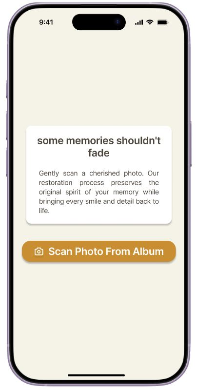
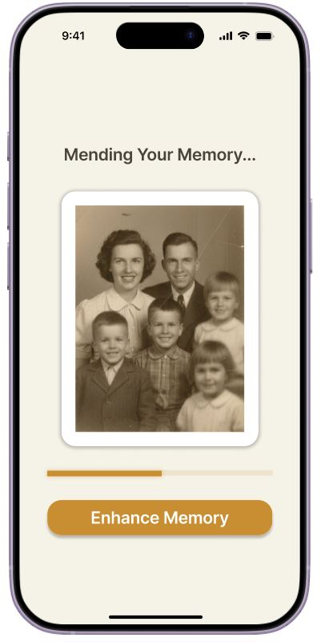
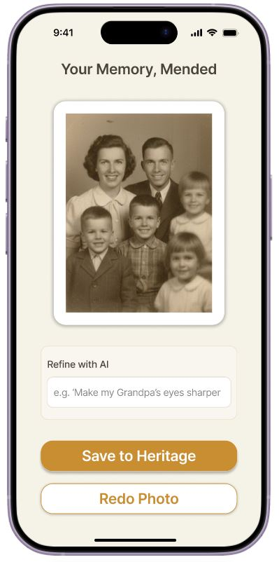

The Challenge
While Generative AI is rapidly evolving, seniors—the primary keepers of family heritage—are often excluded. Traditional restoration tools are clinical, complex, and rely on sliders that require high dexterity.
Problem Statement
How might we design an inclusive, mobile-first experience that empowers seniors to restore their own heritage photos using Generative AI—ensuring the technical process remains simple while preserving the emotional authenticity of the original memory?
Design & Implementation



Key Design Solutions & Accessibility
- Inclusive Accessibility: Implemented 48px+ touch targets and high-contrast #C98D32 buttons for users with limited dexterity.
- Heritage-First UI: Used a warm #F5F2E7 cream palette to evoke nostalgia and reduce digital eye strain.
- LLM Integration: Replaced complex UI controls with a natural language "Refine with AI" interface.